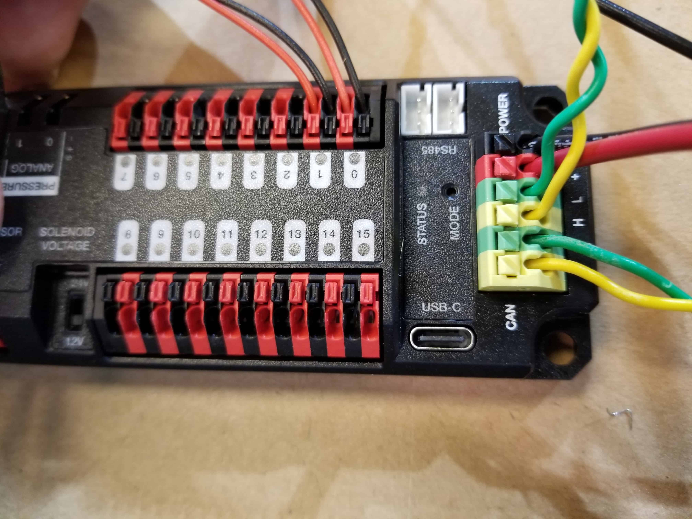
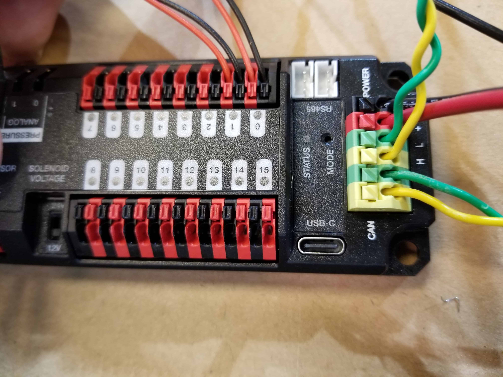
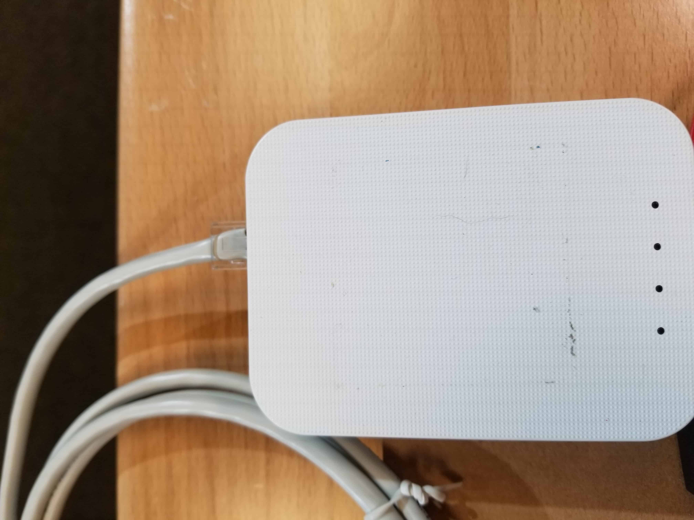

How to Wire an FRC Robot
Note
This document details the wiring of a basic electronics board for bench-top testing.
Some images shown in this section reflect the setup for a Robot Control System using SPARK or SPARK MAX Motor Controllers. Wiring diagram and layout should be similar for other motor controllers. Where appropriate, two sets of images are provided to show connections using controllers with and without integrated wires.
Overview


Gather Materials
Locate the following control system components and tools
Kit Materials:
Power Distribution Hub (PH) / Power Distribution Panel (PDP)
roboRIO
Pneumatics Hub (PH) / Pneumatics Control Module (PCM)
Radio Power Module (RPM) / Voltage Regulator Module (VRM)
OpenMesh radio (with power cable and Ethernet cable)
Robot Signal Light (RSL)
4x SPARK MAX or other motor controllers
2x PWM y-cables
120A Circuit breaker
4x 40A Circuit breaker
6 AWG (16 \(mm^2\)) Red wire
10 AWG (6 \(mm^2\)) Red/Black wire
18 AWG (1 \(mm^2\)) Red/Black wire
22 AWG (0.5 \(mm^2\)) Yellow/Green twisted CAN cable
8x Pairs of 10-12 AWG (4 - 6 \(mm^2\)) (Yellow) quick disconnect terminals (16x ring terminals if using integrated wire controllers)
2x Anderson SB50 battery connectors
6 AWG (16 \(mm^2\)) Terminal lugs
12V Battery
Red/Black Electrical tape
Dual Lock material or fasteners
Zip ties
1/4” or 1/2” (6-12 mm) plywood
Tools Required:
Wago Tool or small flat-head screwdriver
Very small flat head screwdriver (eyeglass repair size)
Wire cutters, strippers, and crimpers
7/16” (11 mm may work if imperial is unavailable) box end wrench or nut driver
Additional 7/16” wrench/nut driver or Philips head screw driver
For CTR PDP only: 5 mm Hex key (3/16” may work if metric is unavailable)
For CTR PDP only: 1/16” Hex key
Create the Base for the Control System
For a benchtop test board, cut piece of 1/4” or 1/2” (6-12 mm) material (wood or plastic) approximately 24” x 16” (60 x 40 cm). For a Robot Quick Build control board see the supporting documentation for the proper size board for the chosen chassis configuration.
Layout the Core Control System Components


Lay out the components on the board. An example layout is shown in the image above.
Fasten Components

Using the Dual Lock or hardware, fasten all components to the board. Note that in many FRC games robot-to-robot contact may be substantial and Dual Lock alone is unlikely to stand up as a fastener for many electronic components. Teams may wish to use nut and bolt fasteners or (as shown in the image above) cable ties, with or without Dual Lock to secure devices to the board.
Attach Robot Side Battery Connector
The next step will involve using the Wago connectors on the PDH. To use the Wago connectors, open the lever, insert the wire, then close the lever. Two sizes of Wago connector are found on the PDH:
Main power connectors: Accept 4 - 18 AWG (.75 - 25 \(mm^2\)), strip 20 mm (~3/4”)
High current channel connectors: Accept 8 - 24 AWG (.25 - 10 \(mm^2\)), strip 12 mm (~1/2”)
To maximize pullout force and minimize connection resistance wires should not be tinned (and ideally not twisted) before inserting into the Wago connector.

Requires: Battery Connector, 6 AWG (16 \(mm^2\)) terminal lugs, 7/16” (11 mm) Box end
Attach terminal lug to positive (red) wire of battery connector. Strip .75” off the black wire.
Lift the lever above the black main power input terminal on the PDH until it clicks into place. Insert the wire. Pull the lever down to secure the wire.
Using a 7/16” (11 mm) box end wrench, remove the nut on the “Batt” side of the main breaker and secure the positive terminal of the battery connector

Requires: Battery Connector, 6 AWG (16 \(mm^2\)) terminal lugs, 1/16” Allen, 5 mm Allen, 7/16” (11 mm) Box end
Attach terminal lugs to battery connector.
Using a 1/16” Allen wrench, remove the two screws securing the PDP terminal cover.
Using a 5 mm Allen wrench (3/16”), remove the negative (-) bolt and washer from the PDP and fasten the negative terminal of the battery connector.
Using a 7/16” (11 mm) box end wrench, remove the nut on the “Batt” side of the main breaker and secure the positive terminal of the battery connector
Wire Breaker to Power Distribution
Requires: 6 AWG (16 \(mm^2\)) red wire, 1x 6 AWG (16 \(mm^2\)) terminal lugs, 7/16” (11 mm) wrench
Secure one terminal lug to the end of the 6 AWG (16 \(mm^2\)) red wire. Using the 7/16” (11 mm) wrench, remove the nut from the “AUX” side of the 120A main breaker and place the terminal over the stud. Loosely secure the nut (you may wish to remove it shortly to cut and strip the other end of the wire). Measure out the length of wire required to reach the positive terminal of the PDH.
Cut and strip the other end of the red wire.
Using the 7/16” (11 mm) wrench, secure the wire to the “AUX” side of the 120A main breaker.
Lift the lever on the positive (red) input terminal of the PDH, insert the wire, then close the terminal.

Requires: 6 AWG (16 \(mm^2\)) red wire, 2x 6 AWG (16 \(mm^2\)) terminal lugs, 5 mm Allen, 7/16” (11 mm) box end
Secure one terminal lug to the end of the 6 AWG (16 \(mm^2\)) red wire. Using the 7/16” (11 mm) box end, remove the nut from the “AUX” side of the 120A main breaker and place the terminal over the stud. Loosely secure the nut (you may wish to remove it shortly to cut, strip, and crimp the other end of the wire). Measure out the length of wire required to reach the positive terminal of the PDP.
Cut, strip, and crimp the terminal to the 2nd end of the red 6 AWG (16 \(mm^2\)) wire.
Using the 7/16” (11 mm) box end, secure the wire to the “AUX” side of the 120A main breaker.
Using the 5 mm Allen wrench, secure the other end to the PDP positive terminal.
Insulate power connections

Requires: Electrical tape
Using electrical tape, insulate the two connections to the 120A breaker.

Requires: 1/16” Allen, Electrical tape
Using electrical tape, insulate the two connections to the 120A breaker. Also insulate any part of the PDP terminals which will be exposed when the cover is replaced.
Using the 1/16” Allen wrench, replace the PDP terminal cover
Motor Controller Power


Requires: Wire Stripper Terminal Controllers only: 10 or 12 AWG (4 - 6 \(mm^2\)) wire , 10 or 12 AWG (4 - 6 \(mm^2\)) fork/ring terminals, wire crimper
For SPARK MAX or other wire integrated motor controllers (top image):
Cut and strip the red and black power input wires, then insert into one of the Wago terminal pairs.
For terminal motor controllers (bottom image):
Cut red and black wire to appropriate length to reach from one of the Wago terminal pairs to the input side of the motor controller (with a little extra for the length that will be inserted into the terminals on each end)
Strip one end of each of the wires, then insert into the Wago terminals.
Strip the other end of each wire, and crimp on a ring or fork terminal
Attach the terminal to the motor controller input terminals (red to +, black to -)
The next step will involve using the Wago connectors on the PDP. To use the Wago connectors, insert a small flat blade screwdriver into the rectangular hole at a shallow angle then angle the screwdriver upwards as you continue to press in to actuate the lever, opening the terminal. Two sizes of Wago connector are found on the PDP:
Small Wago connector: Accepts 10 - 24 AWG (0.25 - 6 \(mm^2\)), strip 11-12 mm (~7/16”)
Large Wago connector: Accepts 6 - 12 AWG (4 - 16 \(mm^2\)), strip 12-13 mm (~1/2”)
To maximize pullout force and minimize connection resistance wires should not be tinned (and ideally not twisted) before inserting into the Wago connector.

Requires: Wire Stripper, Small Flat Screwdriver, Terminal Controllers only: 10 or 12 AWG (4 - 6 \(mm^2\)) wire, 10 or 12 AWG (4 - 6 \(mm^2\)) fork/ring terminals, wire crimper
For SPARK MAX or other wire integrated motor controllers (top image):
Cut and strip the red and black power input wires, then insert into one of the 40A (larger) Wago terminal pairs.
For terminal motor controllers (bottom image):
Cut red and black wire to appropriate length to reach from one of the 40A (larger) Wago terminal pairs to the input side of the motor controller (with a little extra for the length that will be inserted into the terminals on each end)
Strip one end of each of the wires, then insert into the Wago terminals.
Strip the other end of each wire, and crimp on a ring or fork terminal
Attach the terminal to the motor controller input terminals (red to +, black to -)
Weidmuller Connectors
A number of the CAN and power connectors in the system use a Weidmuller LSF series wire-to-board connector. There are a few things to keep in mind when using this connector for best results:
Wire should be 16 AWG (1.5 \(mm^2\)) to 24 AWG (0.25 \(mm^2\)) (consult rules to verify required gauge for power wiring)
Wire ends should be stripped approximately 5/16 (~8 mm)”
To insert or remove the wire, press down on the corresponding “button” to open the terminal
After making the connection check to be sure that it is clean and secure:
Verify that there are no “whiskers” outside the connector that may cause a short circuit
Tug on the wire to verify that it is seated fully. If the wire comes out and is the correct gauge it needs to be inserted further and/or stripped back further. Occasionally the terminal may remain stuck open with the wire inserted and the button released even if the wire is stripped and inserted properly; in these cases wiggling the wire in and out a small amount will often allow the connector to latch shut and grip the wire.
roboRIO Power

Requires: 10A mini fuse, Wire stripper, very small flat screwdriver, 18 AWG (1 \(mm^2\)) Red and Black
Insert the 10A fuse into the PDH in one of the non-switchable fused channels (20-22).
Strip ~5/16” (~8 mm) on both the red and black 18 AWG (1 \(mm^2\)) wire and connect to the corresponding terminals on the PDH channel where the fuse was installed
Measure the required length to reach the power input on the roboRIO. Take care to leave enough length to route the wires around any other components such as the battery and to allow for any strain relief or cable management.
Cut and strip the wire.
Using a very small flat screwdriver connect the wires to the power input connector of the roboRIO (red to V, black to C). Also make sure that the power connector is screwed down securely to the roboRIO.
Requires: 10A/20A mini fuses, Wire stripper, very small flat screwdriver, 18 AWG (1 \(mm^2\)) Red and Black
Insert the 10A and 20A mini fuses in the PDP in the locations shown on the silk screen (and in the image above)
Strip ~5/16” (~8 mm) on both the red and black 18 AWG (1 \(mm^2\)) wire and connect to the “Vbat Controller PWR” terminals on the PDB
Measure the required length to reach the power input on the roboRIO. Take care to leave enough length to route the wires around any other components such as the battery and to allow for any strain relief or cable management.
Cut and strip the wire.
Using a very small flat screwdriver connect the wires to the power input connector of the roboRIO (red to V, black to C). Also make sure that the power connector is screwed down securely to the roboRIO.
Radio Power


Requires: Wire stripper, small flat screwdriver (optional), 18 AWG (1 \(mm^2\)) red and black wire:
Insert the 10A fuse into the PDH in one of the non-switchable fused channels (20-22).
Strip ~5/16” (~8 mm) on the end of the red and black 18 AWG (1 \(mm^2\)) wire and connect the wire to the corresponding terminals on the PDH.
Measure the length required to reach the “12V Input” terminals on the Radio Power Module. Take care to leave enough length to route the wires around any other components such as the battery and to allow for any strain relief or cable management.
Cut and strip ~5/16” (~8 mm) from the end of the wire.
Connect the wire to the RPM 12V Input terminals.
Requires: Wire stripper, small flat screwdriver (optional), 18 AWG (1 \(mm^2\)) red and black wire:
Strip ~5/16” (~8 mm) on the end of the red and black 18 AWG (1 \(mm^2\)) wire.
Connect the wire to one of the two terminal pairs labeled “Vbat VRM PCM PWR” on the PDP.
Measure the length required to reach the “12Vin” terminals on the VRM. Take care to leave enough length to route the wires around any other components such as the battery and to allow for any strain relief or cable management.
Cut and strip ~5/16” (~8 mm) from the end of the wire.
Connect the wire to the VRM 12Vin terminals.
Warning
DO NOT connect the Rev passive POE injector cable directly to the roboRIO. The roboRIO MUST connect to the socket end of the cable using an additional Ethernet cable as shown in the next step.

Requires: Small flat screwdriver (optional), Rev radio PoE cable
Insert the ferrules of the passive PoE injector cable into the corresponding colored terminals on the 12V/2A section of the VRM.
Connect the RJ45 (Ethernet) plug end of the cable into the Ethernet port on the radio closest to the barrel connector (labeled 18-24v POE)
Pneumatics Power (Optional)
 

Requires: Wire stripper, small flat screwdriver (optional), 18 AWG (1 \(mm^2\)) red and black wire
The Pneumatics Hub can be wired to either a non-switchable fused port on the PDH with a 15A or smaller fuse or to a circuit breaker protected port with a breaker up to 20A.
Strip ~5/16” (~8 mm) on the end of the red and black 18 AWG (1 \(mm^2\)) wire.
Connect the wire to the PDH in one of the two ways described above
Measure the length required to reach the red terminals on the short end of the PH labeled +/-. Take care to leave enough length to route the wires around any other components such as the battery and to allow for any strain relief or cable management.
Cut and strip ~5/16” (~8 mm) from the other end of the wire.
Connect the wire to the PH input terminals.
Requires: Wire stripper, small flat screwdriver (optional), 18 AWG (1 \(mm^2\)) red and black wire
Strip ~5/16” (~8 mm) on the end of the red and black 18 AWG (1 \(mm^2\)) wire.
Connect the wire to one of the two terminal pairs labeled “Vbat VRM PCM PWR” on the PDP.
Measure the length required to reach the “Vin” terminals on the PCM. Take care to leave enough length to route the wires around any other components such as the battery and to allow for any strain relief or cable management.
Cut and strip ~5/16” (~8 mm) from the end of the wire.
Connect the wire to the PCM 12Vin terminals.
Ethernet Cables

Requires: 2x Ethernet cables
Connect an Ethernet cable from the RJ45 (Ethernet) socket of the roboRIO to the port on the Radio Power Module labeled roboRIO.
Connect an Ethernet cable from the RJ45 socket of the radio closest to the barrel connector socket (labeled 18-24v POE) to the socket labeled WiFi Radio on the RPM

Requires: Ethernet cable
Connect an Ethernet cable from the RJ45 (Ethernet) socket of the Rev Passive POE cable to the RJ45 (Ethernet) port on the roboRIO.
CAN Devices
roboRIO to Pneumatics CAN

Requires: Wire stripper, small flat screwdriver (optional), yellow/green twisted CAN cable
Strip ~5/16” (~8 mm) off of each of the CAN wires.
Insert the wires into the appropriate CAN terminals on the roboRIO (Yellow->YEL, Green->GRN).
Measure the length required to reach the CAN terminals of the PCM (either of the two available pairs). Cut and strip ~5/16” (~8 mm) off this end of the wires.
Insert the wires into the appropriate color coded CAN terminals on the PH. You may use either of the Yellow/Green terminal pairs on the PH, there is no defined in or out.

Requires: Wire stripper, small flat screwdriver (optional), yellow/green twisted CAN cable
Strip ~5/16” (~8 mm) off of each of the CAN wires.
Insert the wires into the appropriate CAN terminals on the roboRIO (Yellow->YEL, Green->GRN).
Measure the length required to reach the CAN terminals of the PCM (either of the two available pairs). Cut and strip ~5/16” (~8 mm) off this end of the wires.
Insert the wires into the appropriate color coded CAN terminals on the PCM. You may use either of the Yellow/Green terminal pairs on the PCM, there is no defined in or out.
Pneumatics to PD CAN
Requires: Wire stripper, small flat screwdriver (optional), yellow/green twisted CAN cable
Strip ~5/16” (~8 mm) off of each of the CAN wires.
Insert the wires into the appropriate CAN terminals on the PH.
Measure the length required to reach the CAN terminals of the PDH (either of the two available pairs). Cut and strip ~5/16” (~8 mm) off this end of the wires.
Insert the wires into the appropriate color coded CAN terminals on the PDH. You may use either of the Yellow/Green terminal pairs on the PDH, there is no defined in or out.

Requires: Wire stripper, small flat screwdriver (optional), yellow/green twisted CAN cable
Strip ~5/16” (~8 mm) off of each of the CAN wires.
Insert the wires into the appropriate CAN terminals on the PCM.
Measure the length required to reach the CAN terminals of the PDP (either of the two available pairs). Cut and strip ~5/16” (~8 mm) off this end of the wires.
Insert the wires into the appropriate color coded CAN terminals on the PDP. You may use either of the Yellow/Green terminal pairs on the PDP, there is no defined in or out.
Motor Controller Signal Wires

This section details how to wire the SPARK MAX controllers using PWM signaling. This is a recommended starting point as it is less complex and easier to troubleshoot than CAN operation. The SPARK MAXs (and many other FRC motor controllers) can also be wired using CAN which unlocks easier configuration, advanced functionality, better diagnostic data and reduces the amount of wire needed.
Requires: 4x SPARK MAX PWM adapters (if using SPARK MAX), 4x PWM cables (if controllers without integrated wires or adapters, otherwise optional), 2x PWM Y-cable (Optional)
Option 1 (Direct connect):
If using SPARK MAX, attach the PWM adapter to the SPARK MAX (small adapter with a 3 pin connector with black/white wires).
If needed, attach PWM extension cables to the controller or adapter. On the controller side, match the colors or markings (some controllers may have green/yellow wiring, green should connect to black).
Attach the other end of the cable to the roboRIO with the black wire towards the outside of the roboRIO. It is recommended to connect the left side to PWM 0 and 1 and the right side to PWM 2 and 3 for the most straightforward programming experience, but any channel will work as long as you note which side goes to which channel and adjust the code accordingly.
Option 2 (Y-cable):
If using SPARK MAX, attach the PWM adapter to the SPARK MAX (small adapter with a 3 pin connector with black/white wires).
If needed, attach PWM extension cables between the controller or adapter and the PWM Y-cable. On the controller side, match the colors or markings (some controllers may have green/yellow wiring, green should connect to black).
Connect 1 PWM Y-cable to the 2 PWM cables for the controllers controlling each side of the robot. The brown wire on the Y-cable should match the black wire on the PWM cable.
Connect the PWM Y-cables to the PWM ports on the roboRIO. The brown wire should be towards the outside of the roboRIO. It is recommended to connect the left side to PWM 0 and the right side to PWM 1 for the most straightforward programming experience, but any channel will work as long as you note which side goes to which channel and adjust the code accordingly.
The Spark MAX controllers can also be wired using CAN. When wiring CAN the objective is to create a single complete bus running from the roboRIO on one end and running through all CAN devices on the robot. It is recommended to have either Power Distribution device at the other end of the bus because they have built-in termination. If you do not wish to locate one of these devices at the end of the bus see CAN Wiring Basics for info about terminating yourself.
The Spark MAX controllers come with CAN cables that are pre-terminated with connectors. You can chain these cables together directly, or buy or build extension cables to bridge larger gaps. To connect to other CAN devices such as pneumatics controllers, power distribution boards, or the roboRIO you will need to either cut off one of these pre-terminated connectors on the controller, cut off a connector on an extension, or build your own extension with just a single connector.
When chaining controllers together using the provided connectors, make sure to use the provided retaining clip. If unavailable, secure the connection with a small ziptie, electrical tape, or other similar method.
Robot Signal Light

Requires: Wire stripper, 2 pin cable, Robot Signal Light, 18 AWG (1 \(mm^2\)) red wire, very small flat screwdriver
Cut one end off of the 2 pin cable and strip both wires
Insert the black wire into the center, “N” terminal and tighten the terminal.
Strip the 18 AWG (1 \(mm^2\)) red wire and insert into the “La” terminal and tighten the terminal.
Cut and strip the other end of the 18 AWG (1 \(mm^2\)) wire to insert into the “Lb” terminal
Insert the red wire from the two pin cable into the “Lb” terminal with the 18 AWG (1 \(mm^2\)) red wire and tighten the terminal.
Connect the two-pin connector to the RSL port on the roboRIO. The black wire should be closest to the outside of the roboRIO.
Tip
You may wish to temporarily secure the RSL to the control board using cable ties or Dual Lock (it is recommended to move the RSL to a more visible location as the robot is being constructed)
Circuit Breakers
Requires: 4x 40A circuit breakers
Insert 40-amp Circuit Breakers into the positions on the PDH corresponding with the Wago connectors the motor controllers are connected to. Note that the white graphic indicates which breakers are associated with which terminal pairs.
If working on a Robot Quick Build, stop here and insert the board into the robot chassis before continuing.

Requires: 4x 40A circuit breakers
Insert 40-amp Circuit Breakers into the positions on the PDP corresponding with the Wago connectors the motor controllers are connected to. Note that, for all breakers, the breaker corresponds with the nearest positive (red) terminal (see graphic above). All negative terminals on the board are directly connected internally.
If working on a Robot Quick Build, stop here and insert the board into the robot chassis before continuing.
Motor Power

Requires: Wire stripper, wire crimper, phillips head screwdriver, wire connecting hardware
For each CIM motor:
Strip the ends of the red and black wires from the CIM
For integrated wire controllers including SPARK MAX (top image):
Strip the red and black wires (or white and green wires) from the controller (the SPARK MAX white wire is unused for brushed motors such as the CIM, it should be secured and the end should be insulated such with electrical tape or other insulation method).
Connect the motor wires to the matching controller output wires (for controllers with white/green, connect red to white and green to black). The images above show an example using quick disconnect terminals which are provided in the Rookie KOP.
For the SPARK or other non-integrated-wire controllers (bottom image):
Crimp a ring/fork terminal on each of the motor wires.
Attach the wires to the output side of the motor controller (red to +, black to -)
STOP

Danger
Before plugging in the battery, make sure all connections have been made with the proper polarity. Ideally have someone that did not wire the robot check to make sure all connections are correct.
Start with the battery and verify that the red wire is connected to the positive terminal
Check that the red wire passes through the main breaker and to the + terminal of the PDP and that the black wire travels directly to the - terminal.
For each motor controller, verify that the red wire goes from the red PDP terminal to the V+ terminal on the motor controller (not M+!!!!)
For each non-motor controller device, verify that the red wire runs from a red terminal on the PD connects to a red terminal on the component.
Make sure that the PoE cable is plugged directly into the radio NOT THE roboRIO!
Tip
It is also recommended to put the robot on blocks so the wheels are off the ground before proceeding. This will prevent any unexpected movement from becoming dangerous.
Manage Wires
Requires: Zip ties
Tip
Now may be a good time to add a few zip ties to manage some of the wires before proceeding. This will help keep the robot wiring neat.
Connect Battery
Connect the battery to the robot side of the Anderson connector. Power on the robot by moving the lever on the top of the 120A main breaker into the ridge on the top of the housing.
If stuff blinks, you probably did it right. If you hear any clicking, or see any smoke, power the system off immediately, clicking is likely the sound of circuit breakers tripping.
Before moving on, if using SPARK MAX controllers, there is one more configuration step to complete. The SPARK MAX motor controllers are configured to control a brushless motor by default. You can verify this by checking that the light on the controller is blinking either cyan or magenta (indicating brushless brake or brushless coast respectively). To change to brushed mode, press and hold the mode button for 3-4 seconds until the status LED changes color. The LED should change to either blue or yellow, indicating that the controller is in brushed mode (brake or coast respectively). To change the brake or coast mode, which controls how quickly the motor slows down when a neutral signal is applied, press the mode button briefly.
Tip
For more information on the SPARK MAX motor controllers, including how to test your motors/controllers without writing any code by using the REV Hardware Client, see the SPARK MAX Quickstart guide.
From here, you should connect to the roboRIO and try uploading your code!